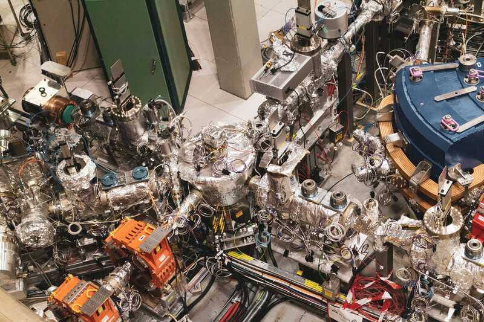
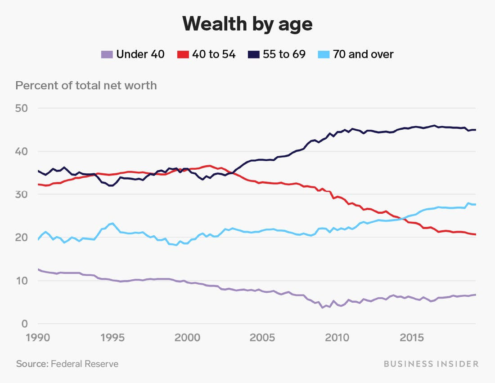

WE All WANT LONGER Life
Our biological clocks tick away.
Our telomeres shorten to critical lengths leading to apoptosis and naturally die.
Why we age
The key is your lipidinoid count
The number of lipidinoids you have is directly related to your age.
The fewer you have, the older you are.
We increase lipidinoids
Our patented machine transfers lipidinoids between people.

For the first time, biological age can go backwards.
Let’s make some money
Elderly have all the assets.

They will pay anything for age reversal.
demand is overwhelming
- $100,000 to reverse age 1 month
- $9,000,000 average sale
- 1,500 on waiting list
Two-sided marketplace

- Cash-strapped young demand side
- Wealthy older supply side
Technical progress
- Syfin 1.0: 1 week younger per 10 years of lipdinoids
- Syfin 2.0: 1 month younger per 10 years of lipidinoids
We’re passing those savings on to our customers
Just kidding.
We pass the profits onto you.
That’s why you’re here.
Supply Side
- Newborn babies
- Alternative to inaccessible abortions
- Test markets: Salt Lake City, Oklahoma City and Charleston
pregnancy = Profit!
- Producer payout: $7,500 + all medical costs per baby (0.75%)
- 1 baby = 110 years of lipidinoids!
- v1 machine: $275,000 gross profit
- v2 machine: $1,100,000 gross profit
$1,092,500 profit for 9 months of unskilled labor.
our supply tech
- MySyfin™ gig-economy app for baby-producers
- Proof of pregnancy detector for Android/iOS
- Artificial insemination kit to optimize process
- Genetic tests for twin-producers
- Futures contracts: Loans available prior to baby production date
Competition
- Process is secret. Machine is patented. No plans to license
- Transfer recovery about 96 hours
- Strict sleep, exercise, and diet is required
- Organ transplants, skin grafting, and cosmetic surgery will hold on to markets
- Our growth sector is in non-traditional vanity markets
Financials
- v2 machines are $10,000,000 and last 2 years
- Clinic cost is $17,000 per day
- Current baby influx is 3.12/week avg
- Full infant depletion: All lipinoids before cell degeneration are made productive
Per unit annual profit
- v1 net per clinic: $11.7 million
- v2 net per clinic: $140.0 million (est)
Raise amount
- $750,000,000 in convertible notes at $2,000,000,000 valuation
- 75 machines in wealthy countries w/o abortion: Saudi Arabia, UAE, Brazil, India, and Singapore
- More baby-producers in poorer countries. Payout can be much lower
- Medical tourism surcharge possible to avoid waitlist
Raise amount cont.
- 6-month lead time for v2 manufacturing
- Investors of over $10,000,000 skip waitlist
- Global operation of 75 clinics in 6-9 months
- Sequoia Capital & Matrix Partners lead at $400,000,000
Q&A